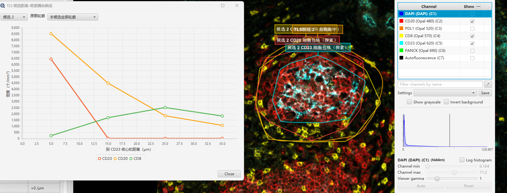
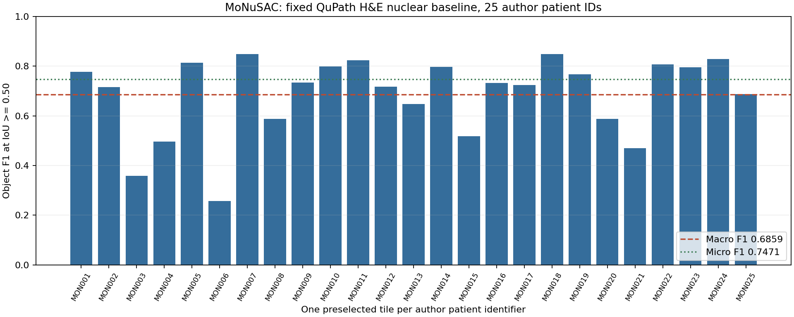
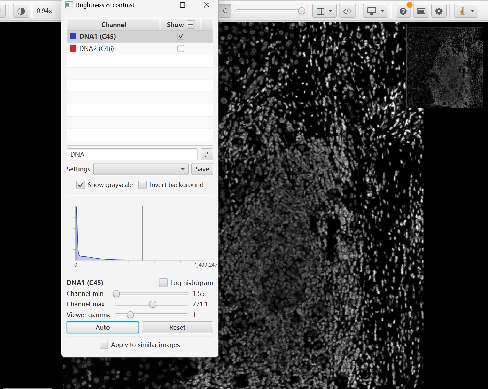
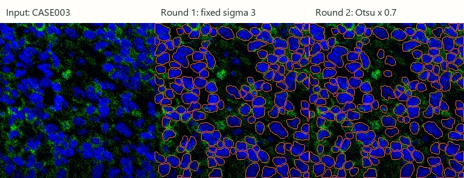
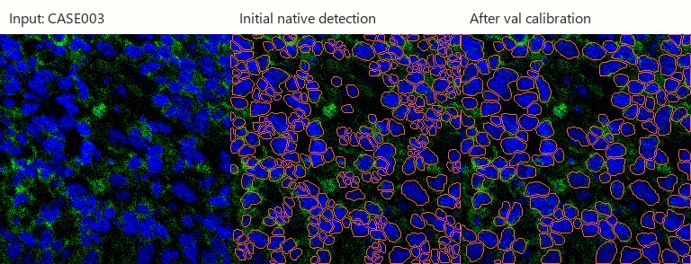
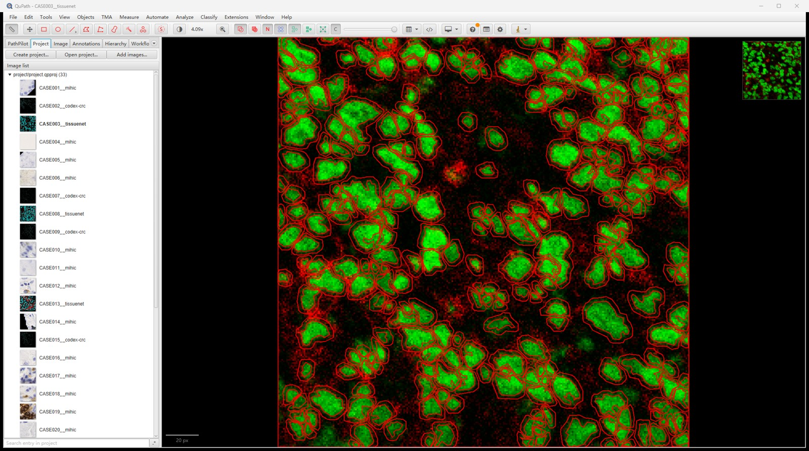
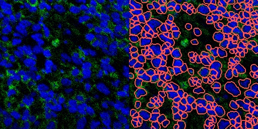
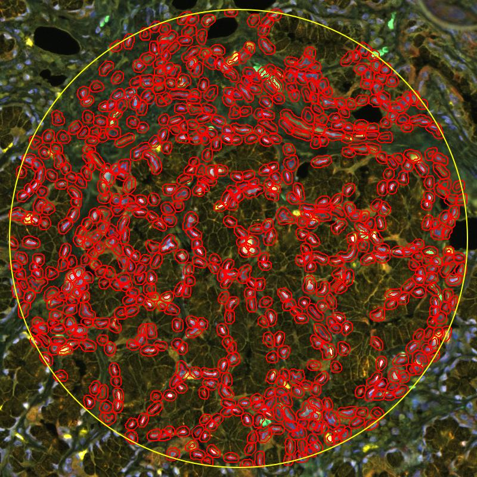
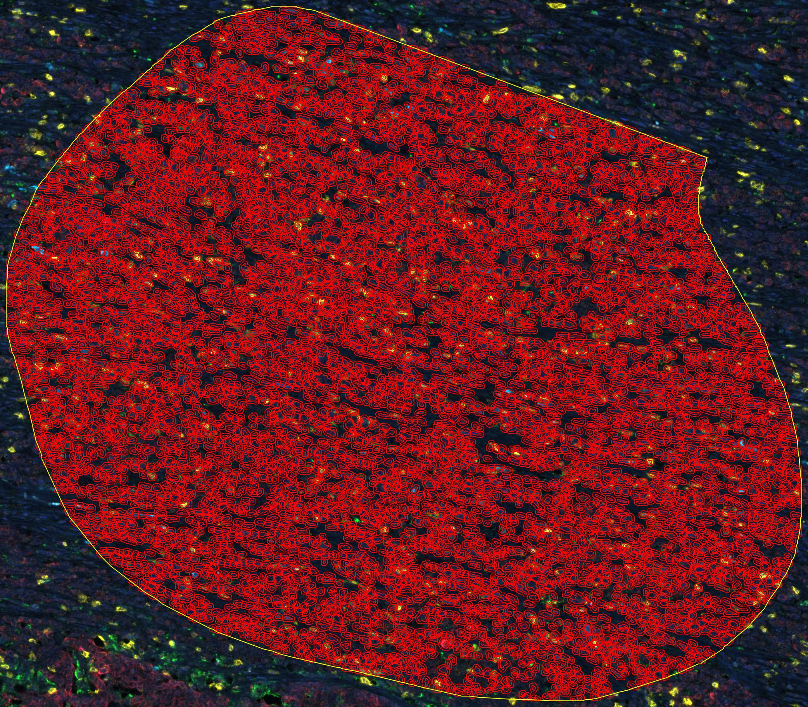
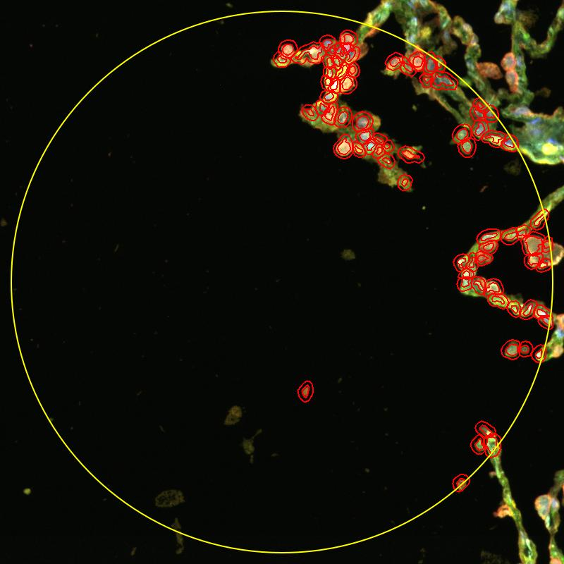

QuPath 0.8 源码版
整图检测后，
按空间曲线寻找 TLS 候选。
从原生 Cell Detection 到 AI 生成的候选搜索，再用冻结细胞坐标复算距离–密度曲线，在原图逐个核查候选。
曲线筛选与原图轮廓已接通
真实运行涵盖本地知识、人工审查、独立复算和 Harness 审计。结构归属与成熟度待病理复核。
旧图匹配877 → 950，漏检457 → 384，误检116 → 128；新图平均F1=0.618，不回流选参。查看第二轮 →
原生检测后读入 TLS 搜索
实际执行后与冻结参考一致
CD20 整体下降，CD8 整体上升
TLS 整图候选搜索与距离–密度曲线
2026-11-24 · 真实切片 GUI 实测
一张七通道荧光切片从原生整图检测进入候选搜索。人工核对真实面板、测量键、Otsu 阈值和代码后，程序从 3,720 个已有细胞找到 11 个 CD23 聚集候选。曲线筛选命中 3 个，未命中 8 个。


到 CD23 核心的距离按 10 µm 分环，计算至 40 µm。各环密度用裁剪后的实际面积计算，再用全分析范围的同标记密度归一化。CD20 相对密度斜率为负且 CD8 为正时记为命中。截图编号属于各自运行。
- 界面与基础量化Marker 下拉联动测量键，缺少组合条件时提示补齐。结果改为表格。实测 A 选区 330 个对象中，74 个达到 CD20/CD23 双阈值，占 22.42%。
- 原生检测与轮廓整图按钮自动使用当前平面，TLS 上限提高至 5,000 个已有细胞。曲线窗口可逐层显示，采样范围与计算几何对齐。
- 本地知识与独立复核知识库启动路径、选卡与模板回填已验证。生成源码与冻结坐标经独立复算，空群体距离保留 null，旧回执可复核。
历史 WP4/WP5 · 2026-11-16
GUI专项与统一记录通过 · 50项OK、原1项跳过
严格 JSON 是唯一任务来源；任何编辑撤销同意，非法 JSON 禁止确认。知识入口要求人工核对真实 panel、保留精确卡版本，定义发送默认关闭。规范 run-UUID 下 skill/request/quantification 共用同一 Harness SQLite 与 session；REQUEST_PREPARED 不冒称网络调用成功、权限或预算统一调度。
| 验收 | 当前结果 | 解释边界 |
|---|---|---|
| 真实 E1 | A0=19/50；A1=A2=47/50；5任务均为8/9/10/10/10 | 149份不同源码，另1个MODEL_ERROR；148份执行、1份预检误报保留，不绕过；仅达观察门槛 |
| 原 GUI / 新 GUI | 原11请求/1672细胞通过；no-db/configured专项通过 | 首轮Label编译失败保留，selectionError修复后原脚本重跑通过；专项仅0/1次本机请求、0新增真实模型请求 |
| 空间卡 / 测试 | 2张DRAFT、0证据、USER_DEFINED_NO_EVIDENCE；50项OK，保留原1项跳过 | brief/template与2指标预填通过；首次最终验证1项隐私投影断言命中技术文档字面量，测试未改，python-final.log保留 |
| 医学参考 | 原生推理23/23；作者参考可评22/23；空间生产包装+审计23/23 | 同患者首图已接触，非患者独立；M009无效Region保留失败；空间包装0模型请求 |
22图可评：count MAE 54.13636、density MAE 1954.84137/mm²、mean NN MAE 1.66433µm，平均相对count/density误差0.627833640965679。
当前只说明工程一致性与本协议观察结果。A1=A2只达到协议观察门槛，不是统计非劣性或医学有效性证明；不评价mIF、TLS、癌症诊断、whole-cell或专家确认。原文、真实截图、候选、请求、作者/患者标识与凭据不发布。
历史：知识简报基础 · 2026-11-16
保留 WP4/WP5 实装前的当时状态
resolve按查询与面板列候选及缺项，brief编译人工选择的确切卡片版本；简报原始字节绑定Spec、候选清单与审计。没有自动科学确认或执行授权。
| 验收 | 实际结果 | 范围 |
|---|---|---|
| 全套回归 / 冻结验收 | 43项OK、原1项跳过 / 21/21 | 原35项保留，R1–R11与B1–B10期望未改 |
| 真实ROI知识绑定 | 四组合各1672细胞，4/4独立审计通过 | 生产GUI与已有任务JSON；本机模型响应夹具，定义关闭 |
| 种子库追加 | 新增11卡、4个追加版本；二次导入0新增 | 24活动来源、2786块、265最新卡，0确认；旧记录逐行未变 |
| E1脚本工程自检 | 15项通过、5份去重源码 | 本机夹具；正式150次真实模型实验未运行 |
WP4的知识按钮、GUI同意文案与共用会话，以及WP5/E2尚未实施。真实模型请求需另行放行，真实候选需人工审查；本轮工程结果不证明知识库增益或医学有效性。原文、卡片、简报、数据库及GUI截图仅留本地。
参考一致性验证 · 2026-11-11
8图冻结复核 + 25图独立H&E基线
新下载MoNuSAC官方测试原包，25个不同作者患者标识各取排序首图，运行前冻结QuPath软件默认核检测参数；25/25完成。下表的两批任务与参数不同，分开报告。
| 任务 | 逐图宏F1 | 合并微F1 | 召回率 |
|---|---|---|---|
| TissueNet已评分8图复核 | 0.6177 | 0.6338 | 57.28% |
| MoNuSAC固定H&E核基线25图 | 0.6859 | 0.7471 | 78.32% |
对象一对一匹配，IoU≥0.50。MoNuSAC有效参考7099、预测7785，TP 5560、FP 2225、FN 1539；已排除模糊区域像素，7个NegativeROA标记的语义仍未裁定，依组织者代码兼容处理。

新数据是H&E核对象，未预测细胞类型；不是mIF、TLS成熟度、癌症诊断或知识库增益测试。逐图F1最低0.2564，不能只看总分。图表只含数值，不含原片或参考标签。官方来源与CC BY-NC-SA 4.0许可
查看冻结荧光图的阈值敏感性

QuPath 实际测试 · 2026-11-11
171 项读写通过 · 1 项无效文件排除
50 通道 IMC 全部 29,850,000 个 float32 像素值摘要一致，双轴尺度与项目重读通过。正常 GUI 已打开测试项目；1,672 个既有细胞的四组合 GUI 回归通过，本轮使用本机模型响应夹具和工程阈值，没有医学准确率结论。

截图：公开作者 IMC，DNA1 单通道显示；50 通道全开会叠加发白。作者 panel 映射仍待核准，截图不表示已识别细胞或TLS。来源与 CC BY 4.0 说明
病例层已接入原Engine · 2026-11-10
5个案例实体、173个SlideCard、4个判据、5个工作流已追加原SQLite。案例分图像资源与研究任务，不按患者数解释；2个工程流程已验证（作者区域计量、IMC完整性），2个仅特征比较，1个仍阻断。
首个实验推荐：LUSC H&E TLS区域定量
内部筛选87分，当前限作者标注计数与面积复核；不是自动TLS识别或成熟度验收。两个NSCLC原文任务为次路线（75/73分），尚缺raw图像与专家确认。9份指定报告及12项阶段答复已整理，整体仍为PARTIALLY_COMPLETE。
病例检索：能找到，也明确缺什么
真实本地向量/融合/重排 · 无自动执行权限
原62张卡的既有版本逐条未改写。扩展库为23个来源、2785个活跃块，包含论文、作者说明和审计记录，不能称为相同数量的论文。原15篇/1820块与旧检索成绩作为历史基线保留。
| 实际查询 | 结果 | 保留的边界 |
|---|---|---|
| 肺癌成熟度 + 可用mIF WSI | 0 | 无原片，不以代表图补齐 |
| 肺癌原文判据候选 | 2 | 研究特定规则，仍无原片/专家批准 |
| CRC budding标准候选 | 1 | 部分原标准参考，不能给患者分级 |
| 已验证LUSC原片工作流 | 1 | 作者区域计量，非自动TLS检测 |
五态比较检查缺panel、来源冲突、队列/组织学不适配和缺数据。真实作者区域计数与合成mIF特征工程检查分开；没有真实mIF医学准确率，也没有知识库增益结论。阅读实体、证据角色和限制
真实WSI：原片与作者区域相匹配
137172×58340 · 原生MPP 0.252µm

已取得661049717字节完整SVS；作者8个TLS多边形导入、坐标空间与保存重读通过。计数和面积不代表自动TLS识别、成熟度或临床诊断，组织分母不足时不输出密度。
NCI GDC / TCGA Research Network。这里只展示降采样概览，原始SVS和作者XML不公开复制；无生成式修改。来源、注释许可与使用说明 · 查看全部证据边界
项目问题总清单
统一查看当前问题、部分改善、已修复缺陷，以及证据、处理顺序和关闭条件。新增 WP4/WP5、统一 run、空间指标与知识与空间 GUI通过状态；历史问题表保留，不把工程通过当医学验收。
第二轮：改善漏检，同时检查新图
2026-11-02 · 开发与留出成绩分开报告
6组预声明候选仅用校准图选参。旧8图对象F1从0.755至0.790，计数MAE从42.625至32.000；漏检减少73个，误检增加12个。
冻结后对预声明的新8图运行一次，平均对象F1为0.618，低于旧开发图。这是同来源图像留出，患者独立性未确认，不能称外部盲测，也没有验证知识库增益。

第一轮修复 · 历史结果保留
2026-11-02 · 新增8张val校准图，旧8图仅作开发回归
在新校准子集预声明比较6组原生参数，冻结选中的sigma=3像素设置后，旧8图平均对象F1由0.416提高至0.755，计数MAE由105.875降至42.625。新检测993个对象，对照作者参考1334个，仍有漏检。

这是开发回归的改善；最终盲测、参考口径复核和知识库增益验证尚未完成。参数只适用于本次图块实验，未改QuPath全局默认设置。
原有证据库基线 · 2026-11-02
2026-11-02 · 本地语料与独立索引分开记录
2026-11-02批次45份有效原文已保存，原文与参考标签不随网站分发。第一批RAG只索引15篇全文、1820个活跃块；62张知识草稿中61张有来源，1张表型候选待补证，全部尚无医学专家批准。
| 模式 | Recall@10 | MRR@10 | nDCG@10 |
|---|---|---|---|
| sparse | 0.1970 | 0.4471 | 0.2302 |
| dense | 0.1870 | 0.5396 | 0.2544 |
| hybrid | 0.2104 | 0.5268 | 0.2573 |
| hybrid+reranker | 0.2569 | 0.6290 | 0.3406 |
当前MiniLM为英语模型，中文用明确词法桥接；BGE-M3未运行。弱标注不是专家金标准，引用定位通过不等于医学引用准确，医学答案指标未测。
首次原生检测基线 · 保留历史结果
实际QuPath项目与原生检测 · 点击放大
测试包包括8张TissueNet结构图、4张92通道CRC CODEX和21张MIHIC组织图块；另有116张IMC核图原始包，尚未加入33例评分。下面的图来自公开匿名样本，不是患者原片。

来自实际窗口句柄截图。CLI执行原生检测后，正常GUI打开保存项目；不是模型生成的界面或软件夹具。

8张总计2181个检测对象，作者参考1334个；对象F1为0.4156，计数MAE为105.875。首次参数相对参考有明显多检；本轮校准结果见上方。
33/33工程检查通过不代表医学准确性。4张CODEX缺通道映射而未检测，21张组织图未运行分类器；本轮没有远程模型调用，也没有证明知识库增益。未知物理尺度不填默认值，不算cells/mm²。
非商业学术展示。TissueNet：Van Valen Lab / Caltech，经CelloType处理；侧栏CRC CODEX与MIHIC为各自CC BY4.0来源。截图缩放并压缩，对比图仅拼接原输入和实际检测边界。数据归属与许可全文 · 验证范围和公开来源。显示配色不决定marker身份，参考掩膜和逐图答案留在本地。
历史真实切片 ROI · 2026-10-27
真实选区局部 · 点击图片放大



从已保存的原选区直接导出，保留黄色选区边界与红色检测轮廓。仅展示局部，不包含软件侧栏、文件名或患者标识；工程显示不代替科学准确性验证。
历史原片与真实模型 · 2026-10-30
在正常 PathPilot 中设置实际测量键，显式点击 Otsu 估计未确认阈值，再由真实模型生成、审阅并执行。1672 个可评估对象、缺测 0；四种组合相加为 1672，重开前后细胞 ID 和测量一致。
2026-10-30：本次验收使用实际原片和正常 GUI；此前单元、合成图及本地模型夹具仅为历史工程检查。自动阈值未经导师确认，结果只作探索。
已验证能力回顾 · 截至 2026-11-24
可暂停、逐步查看，最后停在当前能力边界
这是根据已核对材料编排的流程动画。播放不会运行 Python、调用模型或分析切片；演示走完也不会改变上面的项目进度。
- 读取模拟名单
- 安排固定任务
- 按规则筛选
- 计算数量比例
- 保存结果记录
内置模拟名单 · 圆形是对象示意，不是识别出的细胞
名单里有 7 个对象，类别提前给定。
人工代码版本演示 · 只保存和检查，不执行
第一版：人工准备
pixel > 128任务要求“大于等于 128”，先保存任务和合成像素。
本地真实文件信息 · 文件卡片示意
已找到 3 张 .qptiff；这一步没有检测细胞。
2026-11-11 实测摘要 · 网页播放不会运行分析
2026-11-16实测汇总 · 网页仅回顾证据
固定统计 · 步骤 1 / 5
读取内置的 7 个对象
没有输入真实图像时，演示会读取预先准备的模拟名单。CD8、PD-L1 等类别已经写在名单里。
从基础程序，到完整研究
按工作依赖展示，阶段不代表相同工作量
- ✓
离线计算与管理
固定统计、权限、任务和审计
模拟范围已验证 - ✓
代码记录与预检
任务、源码与历史版本对应
记录与预检已验证 - 03
任务与运行边界
任务绑定已验证；隔离仍待验收
当前继续核验 - 04
AI 生成与 ROI 运行
真实工程链路通过，科学评价待补
部分完成 - 05
专家反馈后修订
具体反馈、再运行和前后比较
待验证 - 06
比较与研究结论
已有工程基线，归因与外部验证待补
预备比较
真实切片已跑通整图原生检测、AI 候选搜索、距离–密度曲线和 Harness 独立复算。当前 GUI 与记录通过工程验收，病理判读与跨切片验证仍待完成。
哪些环节已经接通？
沿着每条线看，避免把局部成功当成全流程完成
源码版 PathPilot
原生整图检测与 TLS 搜索通过单片工程验收
原生检测与测量
33图块工程通过，8张已量化误差
固定统计与研究
已实现与计划分开记录
本地知识与空间
知识简报 GUI、TLS 知识读取和曲线筛选均可运行
原GUI已在实际 QuPath—PathPilot 链路用1672细胞完成四组合；新GUI知识/空间专项已通过。公开展示经核对的匿名局部截图；病理准确性仍须独立评价。
下一步：把证据与准确性连起来
独立校准 → 固定方法 → 同条件对照 → 专家复核
每一步，怎样才算完成
点击展开 · 当前准备阶段默认展开
01离线计算与任务管理
指定范围已完成
02研究代码记录与预先检查
指定范围已完成
已有：分析要求、合成输入、源码与反馈的版本关系，外部文本导入，文件完整性检查，以及首次模型输入整理。
范围：两版源码和修改意见来自人工演示；0.5 来自固定参考程序。所有待测试代码仍是 NOT_EXECUTED，不是实际执行结果。
03正式任务、输入和运行边界
部分完成
已验证：三张真实图像的像素读取、面积 ROI、原生 DAPI 检测与七通道测量；任务规格、实际测量键、图像与区域绑定。原项目保持不变，结果保存在测试项目副本。
继续核验：检测准确性与科学阈值的专家依据、系统级代码隔离，以及桌面恢复。PathPilot 可通过原生参数面板启动当前平面的整图检测，分析由操作者保存。
网页展示经核对的匿名局部界面与工程汇总。
04人审知识、AI 生成与实际分析
工程流程与GUI专项已验证
已验证：严格 JSON 与人工同意、精确知识卡选择、三档 assurance、方法定义门槛、统一 run/session 和两项空间指标均已落源码。真实 E1 记录 A0=19/50、A1=A2=47/50；原 GUI 用 11 请求和真实1672细胞四组合通过，旧回执/Store重导入返回同一Task。
2026-11-24，整图 3,720 个对象的真实运行产出 11 个 TLS 候选和 3 个曲线命中，已复算核验。
仍缺：统计非劣性、跨任务泛化、独立患者数据和专家科学评价。A1=A2只是观察门槛，操作者审阅不等于独立病理专家审查，工程统计一致性不等于检测或诊断准确。
05专家反馈、代码修订与重新评价
待实现
要做：专家指出一个具体问题，模型在允许范围内修改代码，再运行并比较修改前后结果。
完成依据：初版结果、明确反馈、修订代码、新结果及误差。改好、没变或变差都要保存；仅有两份代码文件不算跑通。
06比较实验与研究结论
已有协议基线 · 科学结论待补
已有：真实 E1 的 A0=19/50、A1=A2=47/50，五任务均为8/9/10/10/10；149份不同源码逐份审查后148份执行，无补跑。医学H&E;原生推理23/23、作者参考可评22/23，空间生产包装23/23。
仍缺：统计非劣性预声明、知识增益、独立患者/来源、专家审核和mIF/TLS/癌症诊断验证。同患者首图此前已接触，不能把23图第二图写成患者独立测试；WP5M009无效参考保留失败。
并行的 QuPath 工作：真实连接、只读结果展示、批准后写回与恢复分别验收，不要求先完成写回才开展研究。
进度有依据，材料找得到
本地链接需要与项目目录一起保留
直接打开相关材料
- TLS 整图搜索与曲线验收 ↗当天功能更新、真实对象计数、斜率公式和界面截图。
- 知识简报接入与本轮验收 ↗21行、43项与真实ROI四组合绑定；夹具和未做部分单独记录。
- 架构入门与一分钟汇报稿 ↗从零理解模型、Agent、工具和 Harness 的分工。
- 阶段成果与导师沟通指南 ↗目前完成了什么，还缺什么，要问老师什么。
- 10 月 19 日开发交接与测试依据 ↗两个 Python 环境各 71 项测试，以及安装后检查的范围。
- 正式开发路线与验收条件 ↗阶段名称、实机检查和研究执行的前置条件。
- 真实切片信息与预览文件夹 ↗3 张切片的尺寸、通道和本地缩略图路径。
最近的进展
- TLS 整图候选搜索与曲线核验
整图 3,720 个对象，11 个 CD23 聚集候选，3 个曲线命中。补齐整图原生检测、逐层查看、相对密度判据及空值回执修复。
- WP4/WP5源码、真实E1与空间生产包装已同步
严格JSON/撤权、人审知识、统一run、定义门槛和两项空间指标落源码。真实E1 A0=19/50、A1=A2=47/50，仅观察门槛；原GUI 1672细胞四组合通过。新GUI专项与50项全套已通过，WP5M009无效参考保留。
- 知识简报绑定与真实ROI验收通过
WP1/WP2完成；21行冻结验收、43项OK/原1跳过，四组1672细胞知识绑定审计通过。11卡新增+4版本追加，旧记录未变；WP3仅本机夹具，WP4/WP5及真实模型对照未开展。
- 知识库、公开图块与独立评分已形成首批证据
45份原文在本地；RAG基线15篇、62张草稿和36题弱标注四模式实测。QuPath载入33图块，工程重读33/33；8张原生检测对象F1=0.416，有明显多检。本轮未调用模型，专家审核与知识增益对照待开展。
- 真实样例片与真实模型的完整流程通过
正常 GUI 圈选单核并计得 1；组织 ROI 1672 个对象的四种组合分别完成真实模型生成、代码审阅、执行和审计。副本保存重开后的细胞 ID／测量一致。修复 def 入口误拒绝及纯代码请求设置；自动阈值始终标为未确认探索。
- 多通道阴阳组合已接入，真实测量工程回归通过
17 项 Python 测试、四种合成组合和新小切片 117 个工程对象的 GUI 流程通过；显式规则、独立用例、冻结快照和 Python 复算一致。模型使用本地夹具，阈值为工程测试值。人工细胞真值、真实阳性阈值和 TLS 空间判断仍未验收；源码仅做本地 Git 回溯。
- 三张真实 ROI 的 PathPilot 统计与保存重读通过
真实模型生成、审查运行、冻结细胞、独立数值核验和两阶段 Harness 审计通过。修复空输入异常用例契约及 JavaFX 样式启动参数；15／10／75 项 Python 检查、源码 GUI 与 0.7 CLI 回归通过。固定报告已通过；桌面恢复和长路径修复落地仍待完成，科学准确性未验证，本条只记录工程验证范围。
- 停用源码版重复加载的旧 PathPilot 扩展
正常关闭旧实例，将 0.7 PathPilot JAR 移出扩展目录并校验备份，保留 0.8 内置面板。桌面连接器失败且系统拒绝桌面输入，用户桌面重启尚未完成；未将隔离窗口当作用户可见结果。该历史事件保留当时的验证范围，最新结果见本页当前定位。
- Harness 已管理 QuPath skill 与冻结快照记录
skill 经摘要校验和 Harness 任务提供给 coder；审查后冻结已有细胞，结果核对后保存审计。主线 14 项、0.7 回归 9 项及源码版合成 GUI 验收通过；现场测量修改后回放仍使用原值。真实模型／切片和任意代码隔离待验收。当时原目录写入受限；后续验证与发布记录单独保留。
- 代码整理：明确维护源并检查副本漂移
以 QuPath 0.8 pathpilot-coder 为维护源，统一同步 coder、skill 与契约副本；64 个受控文件一致，0.8 回归 9 项、0.7 回归 8 项通过。未改变科学规则或新增真实模型／切片验收。code 原位写入仍被拒绝；该次原位发布失败；本页当前验证范围已单独更新。恢复命令见代码整理记录。
- 新增完整代码说明与周三最小验证指南
按当前源码逐块说明 QuPath 接入、规则统计、Harness、研究预检、契约、探针和测试；附最小命令、预期 3／4 个对象的不同场景、报告查看及导师自查。当天重新通过 75 项测试和安装版合成图链路；没有改分析算法、打开真实片或推进模型／动画终点。
- QuPath 单 ROI 首版完成合成图验证
新增 qupath_bridge：可信固定脚本 → 单 ROI 检测／副本测量 → 冻结快照 → Harness roi.summary → 数量、初步性状、CSV 与审计。安装版 0.7.0 实测得到 3 个已知合成细胞；75 项 Python 和 16 项安装检查通过。按用户选择，真实切片稍后验收；新增合成 ROI 动画，原 AI／真实切片终点保持不变。
- 本周最小任务：ROI 计数与初步性状
将五 marker 表达和有依据的表型说明纳入本周目标，架构 §1.7 明确输入、输出及验收。现有面板无 Ki-67 等增殖指标，不将信号强判作高增殖；真实分析仍待实现，阶段与动画终点保持原有证据。
- 明确 QuPath 主线与 Harness 边界实施
安装基线 F:\QuPath-0.7.0 的核心／GUI JAR 为 0.7.0，runtime 声明 Java 25.0.2；PathPilot 源码为 0.8.0-SNAPSHOT，移植待验证。架构 §1.5–§1.6 写明优先接入点、统一执行入口和越界拒绝验收，现有阶段及动画终点不变。
- 已登记 7 通道映射
用户 INFO 日志：0 DAPI；1 CD20／Opal 480；2 PDL1／Opal 520；3 CD8／Opal 570；4 CD23／Opal 620；5 PANCK／Opal 690；6 Autofluorescence。完整来源、PD-L1 别名和适用边界见架构 §1.4；登记不表示检测完成，动画终点不变。
- 新增 QuPath 与 PathPilot 技术原理报告
沿真实调用链解释模型、StarDist、阈值、空间分析和导出；报告为源码静态阅读，不表示实际模型调用、检测或集成完成。第二次谈话目标收敛到单 ROI Groovy 计数，动画保持原能力终点。
- 离线研究输入与记录检查完成
补上外部源码导入、文件检查和模型输入准备，保留本地测试与安装验证证据。
- 找到并读取 3 张真实切片
已查看元数据和缩略图；尚未检测细胞或判断标记阳性。
- 加入能力动画与文档阅读区
三种能力可逐步播放，根目录 Markdown 可分组搜索并阅读全文；后续开发同步维护进度、动画和文档快照。
- 网站上线，增删改后必须同步
GitHub Pages 首次部署成功，公网主页返回 HTTP 200；版本管理与架构已明确要求同次交付更新看板、正文、下载与公网内容，并核对部署。研究阶段与动画终点仍按原有证据。
和老师沟通时，可以这样说
“这张切片已经能从整图检测接到知识辅助候选搜索。每个候选都能查看原图轮廓、分环密度及斜率，接下来需要复核标记阈值、分割和组织结构。”
历史源码原理报告
早期工具循环及固定分析的技术记录；当前调用链请查看代码阅读路线图。
2026-10-21 源码静态分析，旧版扩展已退役，不能视作当前执行流程。
代码结构，一张图看懂分工
点选模块关系图与代码目录，沿固定统计、研究预检和 QuPath 探针路线，查看现有技术和实现边界。
2026-11-24 核对：纳入全图原生检测、TLS 候选搜索、距离–密度曲线、轮廓控制及空值审计分支。
Harness 如何管理 skill 与执行记录
QuPath skill 已注册为受控资源：校验、源码上下文和任务审计先于模型请求；人工审查后，冻结细胞快照与结果也保存到 Harness。
2026-10-27：三张真实 ROI 的 skill 任务、冻结计算与结果审计通过；当前入口不自动检测，任意代码 OS 隔离仍未验证。
PathPilot：当前入口与历史基线
0.8 源码入口已验证真实模型生成、操作者审查及三个 ROI 的冻结统计。0.7 固定分析面板的 GUI 证据使用合成图；旧固定报告另经干净 0.8 CLI 核验真实数据。
原生检测是另行审阅的上游流程；科学准确性、专家反馈及系统级隔离仍待验证。公开页面仅展示脱敏范围。
从圈选到数细胞：代码阅读路线图
先用最简单的话理解切片选区如何得到细胞数量，再按真实调用顺序阅读 QuPath 界面、代码生成、人工审查、细胞快照、Harness 和测试。
2026-10-27 按当前源码核对；PathPilot 当前统计已有细胞对象，检测由上游另行完成。
周三前，把代码讲清楚
完整解释每个模块、关键文件和实际调用链；区分程序结果与科学验证，并按步骤运行一次 QuPath 合成图最小演示。
2026-10-26 源码核对及复跑通过。面向 10 月 28 日导师沟通，附报告查看、故障定位和汇报自查。
项目文档已整理到独立页面
按用途浏览、搜索和阅读全部 Markdown，也可以下载单份或打包下载。
公网发布：2026-10-21 已完成 GitHub Pages 首次部署，公网主页实测返回 HTTP 200，首次部署工作流成功。后续增删改内容必须在同次交付运行同步脚本并核对线上结果，部署记录可查看。仅发布展示页与文档；研究阶段、缺项与能力动画终点保持原有证据范围。查看连接与自动更新说明。
2026-10-21 网页自检通过：三个动画场景、四种屏幕尺寸、文档搜索跳转、全部 MD 与 ZIP 下载内容一致；本地网页检查记录仅证明页面行为，不作为病理分析、模型调用或候选执行证据。